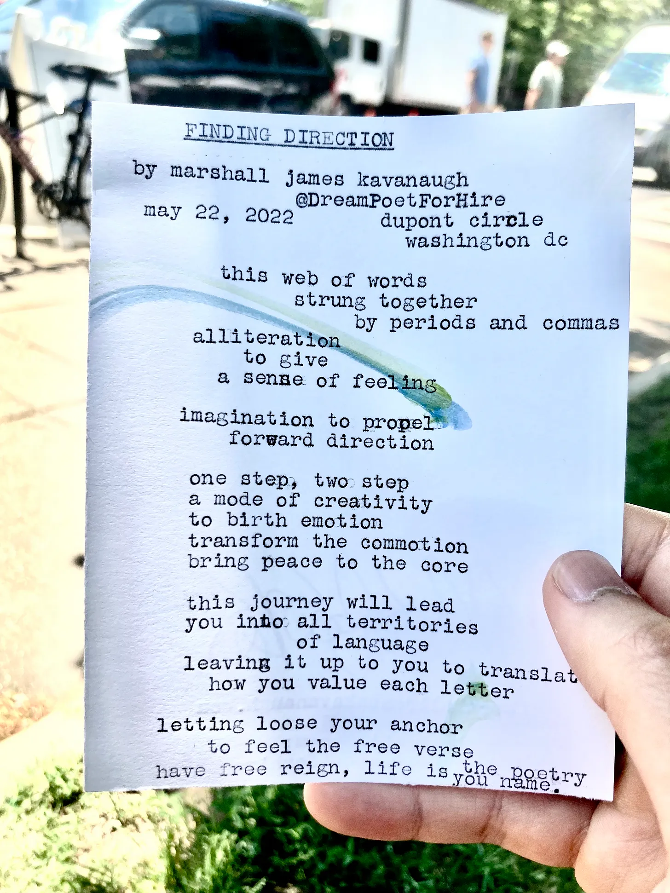

Something New

I’ve been beating myself up over the fact that I’m not writing as much. Or rather, that I’m not writing anything I deem worth publishing. I still journal and scrap together the occasional poem, though most of it sits in draft form. My priorities are different these days, which I’m continually adjusting to. I’m focused on my finding my stride in academic research, improving my guitar skills, and generally maintaining my health and sanity after a grueling succession of months in the first half of 2022.
Still, I want to make room for words and get in the habit of publishing something. This means I need to shift my expectations regarding what I write and the form it takes. I’ve always had obsessive and perfectionistic tendencies when it comes to my writing. It’s a deadly cocktail of traits that when left unchecked can crush the creative soul.
What I want to commit to then is writing brief weekly reflections that have the feel of something a little unfinished. I want to also include links to articles I found interesting, music and poems I enjoyed, and other miscellaneous findings from my ongoing webcrawls. Think charcuterie board of assorted thoughts rather than a full five-course meal. The goal is to develop a ritual and space where I can reflect on my weeks without constraining myself to a particular form like a long-form essay (although those may naturally appear in the process of creating these).
Writing more doesn’t require that I publish anything, but it serves as a conduit that focuses my efforts. Of course, I still want to write BEAUTIFUL, EVOCATIVE, POETIC works (by my standard, which isn’t saying much heh) that make people feel all the undefined emotional tingles inside. For now though I’m happy to work with a different set of intentions as I continue to reorient my internal compass.
What I’m trying to say is: I’m beginning to internalize that how I live the rest of my life is up to me. I’ve always known this at an intellectual level – as most of us do – but only recently has it started to become a visceral truth, something I can taste in my mouth every morning when I wake up. More on this in a future weekly, but the implication is that if I want to get anything done, I need to set aside time to make things happen. I need to understand what my needs and limits are so that I can work with them in the service of what I want.
The life we want isn’t going to be handed to us on a silver platter. It requires work, the only kind worth doing. Maybe these are obvious points, though putting them into action requires a certain discipline. It might mean getting up at 5am every day so that you can pay your soul its dues. Or forgoing nightly socials in favor of watching guitar tutorials on YouTube. Or running like your life depended on it (for Murakami it did). But once you get going it’s easier to reach escape velocity. You move beyond yourself so that you can see your self more clearly and how it is woven within the threads of an ever-changing context. From there, anything is possible. Murakami:
Sometimes, when I think of life, I feel like a piece of driftwood washed up on shore.
I’m curious where the tide will take me, and how well I will surf the waves.
Reads, Music, Miscellanea
The Empathy Racket. On the dangers of art as a utilitarian tool. Will be of interest if you’ve ever been curious about what art is, the “role” of art in society, utilitarianism, and the history of empathy:
We each have a spirit life that does not heed society. Our spirit lives rear up out of the unconscious at all the most intense moments in our existence: during sex, meditation, and illness; when dreaming, in danger, and falling in love; through encounters with great art. Artworks speak to us in their own registers. It is on us to cultivate the many ways we can respond.
Time Lost and Found. Aimed at writers and creatives more generally, but the overall message rings true for anyone seeking to nourish their innermost desires, to live a fuller life:
They look at me bitterly now—they don’t think I understand. But I do—I know how addictive busyness and mania are. But I ask them whether, if their children grow up to become adults who spend this one precious life in a spin of multitasking, stress, and achievement, and then work out four times a week, will they be pleased that their kids also pursued this kind of whirlwind life?
If not, if they want much more for their kids, lives well spent in hard work and savoring all that is lovely, why are they living this manic way?
What I Talk About When I Talk About Running. I love peering into the minds of others, especially strange and creative people. If you’ve read anything by Murakami, you’d think he fits the bill for both. But in WITAWITAR he seems pretty ordinary actually, boring even. That doesn’t make him any less prolific or interesting though. I think it was reading this memoir that spurred me into taking my writing more seriously, beginning with simply setting aside time every morning to write before doing my academic work. He might also be the reason I’m going to the gym consistently again.
In recent years I’ve been obsessed with modern classical musicians like Ludovico Einaudi and Ólafur Arnalds. This is reflected in an analysis I did of my Top 100 Spotify songs over the years. Increases in acousticness and instrumentalness, down in speechiness and danceability (don’t worry I still love to dance). This fits my love of playing fingerstyle and acoustic guitar too. Signs that I’m getting older lol, maybe. Or that I’m realizing words are not always needed to convey emotion and beauty. Anyways, here’s a song I’ve loved this week: